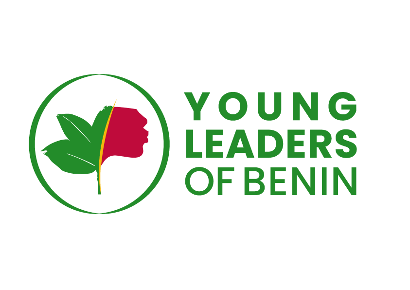

Communautaire
CommunautaireLumière d’Avenir
Un projet d’espaces communautaires solaires et d’éducation durable à Djanglanmè, dans la commune de Toffo au Bénin.
Découvrir le projetConcevoir des projets, mobiliser, transmettre et suivre les actions : mon engagement associatif donne une dimension collective à mon parcours.

Chargé de Projets & Programmes depuis janvier 2025, je contribue à la conception et au pilotage d’initiatives, avec une attention portée aux budgets, aux délais et aux indicateurs de suivi.
CommunautaireUn projet d’espaces communautaires solaires et d’éducation durable à Djanglanmè, dans la commune de Toffo au Bénin.
Découvrir le projetCommunautaireSensibilisation au changement climatique et accompagnement de l’engagement environnemental dans les établissements scolaires.
Découvrir le projetCommunautaireContribution à un programme de dialogue autour des relations saines, de l’égalité et de la complémentarité.
Découvrir le projetImages des projets : illustrations générées par IA, et non photographies des réalisations. Les contenus décrivent le rôle et le contexte de chaque travail.
Contribution à l’organisation du week-end d’intégration 2025 de YLB en tant que responsable adjoint : coordination, organisation et dynamique de groupe.
Animation d’événements associatifs, notamment comme maître de cérémonie lors des « 3 ans d’impact » de YLB.
Représentation de YLB aux côtés de son président lors d’un atelier en mars 2025, autour des enjeux de qualité de l’air à Cotonou.
Reconnaissance comme ambassadeur de Young Leaders of Benin en 2025, dans la continuité de mon engagement associatif.